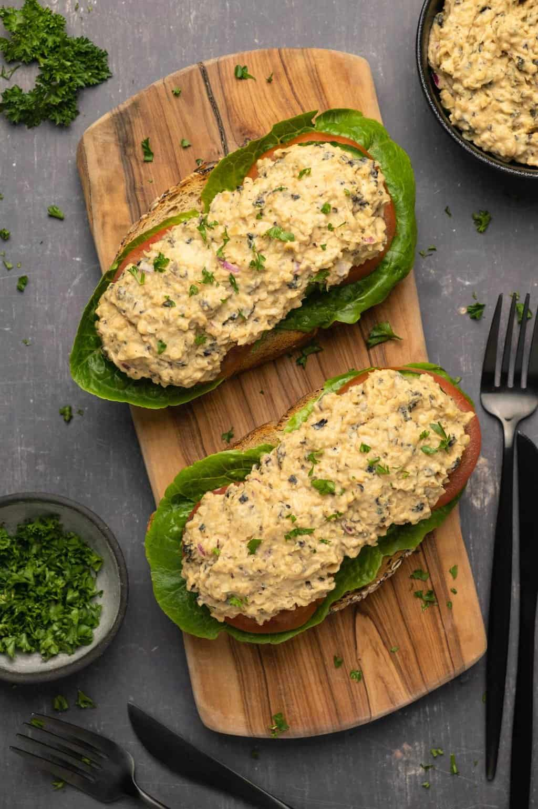

Vegan Tuna

This depressing little slurry of chickpeas and mayonaise may end up tasting more like
tart, wet cardboard rather than real tuna, but I invite you to ask yourself if
real tuna tastes very good in the first place.
A who's who of spices and herbs come together to salvage whatever they can in this dish,
and do they succeed, well I can't answer that. All I can say for sure is that I'd rather
that than nothing at all. You could add salt and garlic to a mushy pile of paste and
I might believe it's real food.
Ingredients
- 15 oz Can Chickpeas (drained)
- 1/4 cup Vegan Mayonaise
- 1 Nori Sheet
- 1/4 cup Red Onion (finely diced)
- 1 Tbsp Lemon Juice
- 10 Capers
- 1/2 tsp Garlic Powder
- 1 Tbsp Nooch (Nutritional Yeast Flakes
- 1 Tbsp Tamari
- 1/2 Tbsp Dijon Mustard
- 1/2 tsp White Vinegar
- Salt and Pepper (to taste)
Steps
-
Add the chickpeas to a mixing bowl and mash them with a fork.
-
Add in vegan mayonnaise, finely chopped nori, finely chopped red onion,
lemon juice, finely chopped capers, garlic powder, nutritional yeast,
tamari, dijon mustard, white vinegar and salt and pepper.
-
Taste test and add more salt and pepper if needed.
-
Mix in and you’re ready to serve!